2024 · AFCN, sesiunea I/2024, Patrimoniu cultural imaterial
Patrimoniul cultural al germanilor din Bucovina
Promovarea diversității culturale a comunității germane din Bucovina, o comunitate cu tradiții îndelungate și o contribuție însemnată la viața socială și culturală a județului Suceava.
Perioadamartie – noiembrie 2024
FinanțatorAdministrația Fondului Cultural Național, contract nr. P0552/29.02.2024
RolSolicitant
Ce s-a făcut
- un portal online informativ, germani.ro, cu istoria comunității, tradițiile religioase, obiceiurile de Crăciun, Paște și de Ziua Recoltei, meșteșugurile, bucătăria tradițională și viața culturală din Rădăuți, Suceava și Câmpulung Moldovenesc;
- 10 documentare TV difuzate la Regional Radio/TV;
- emisiuni radio și TV, un pliant și un DVD promoțional;
- un festival cultural cu expoziție foto, expoziție culinară și spectacol al ansamblurilor comunității germane.
Comunitatea germană din Bucovina numără astăzi aproximativ 1.500 de persoane. Germanii s-au stabilit în regiune după 1775, au fondat localități precum Gura Putnei și Poiana Micului și au fost recunoscuți drept „purtători de cultură”. Casele germane din Rădăuți, Suceava și Câmpulung Moldovenesc rămân locurile de întâlnire ale comunității.
Fotografii

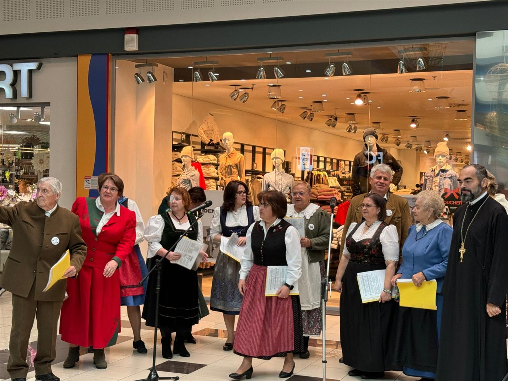
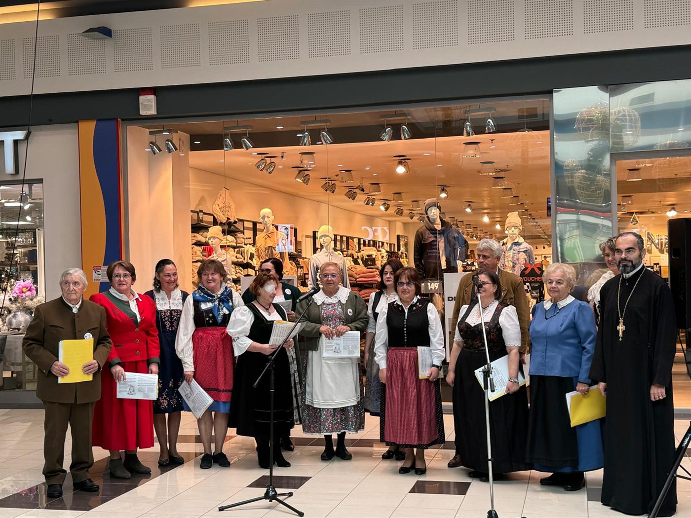
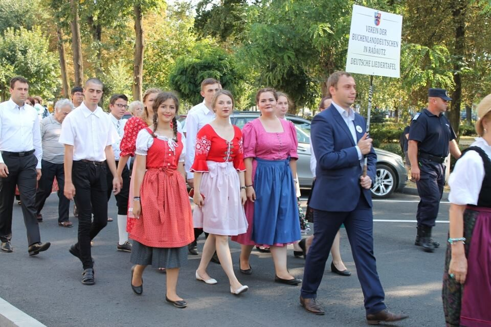
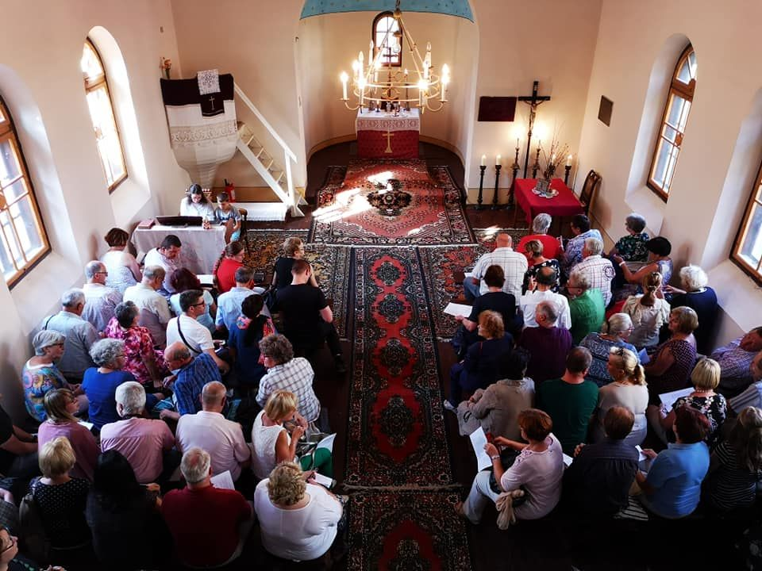
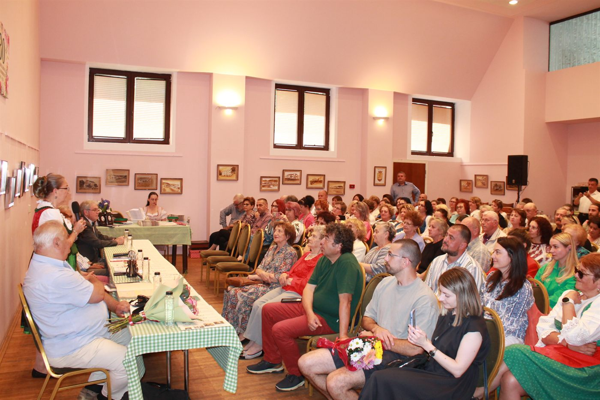
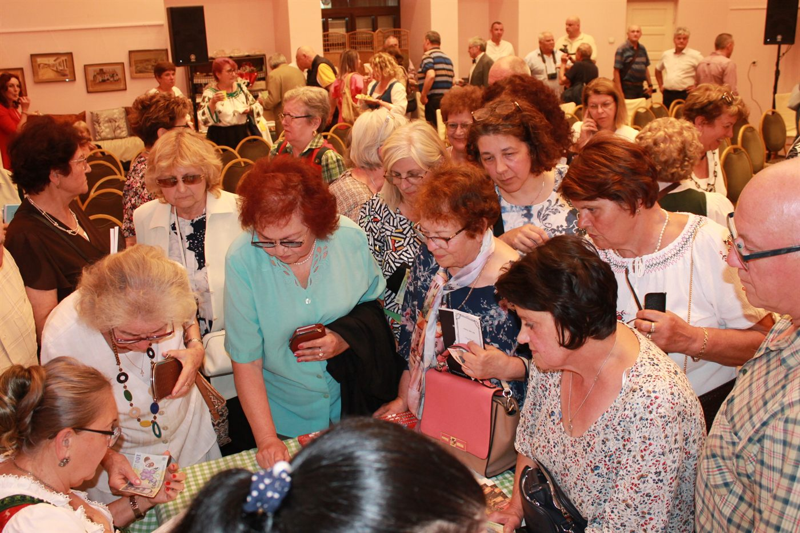
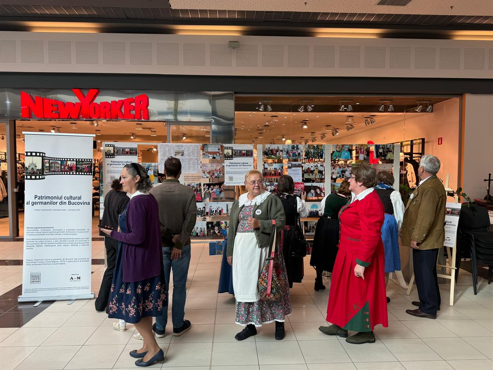
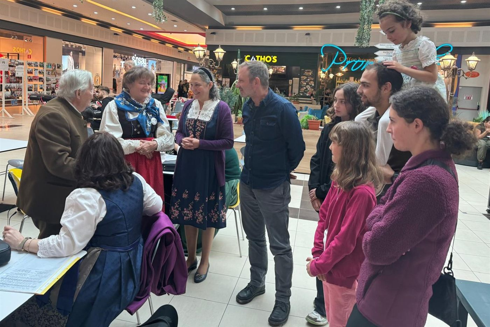
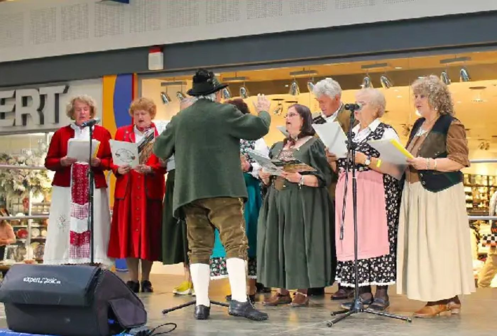
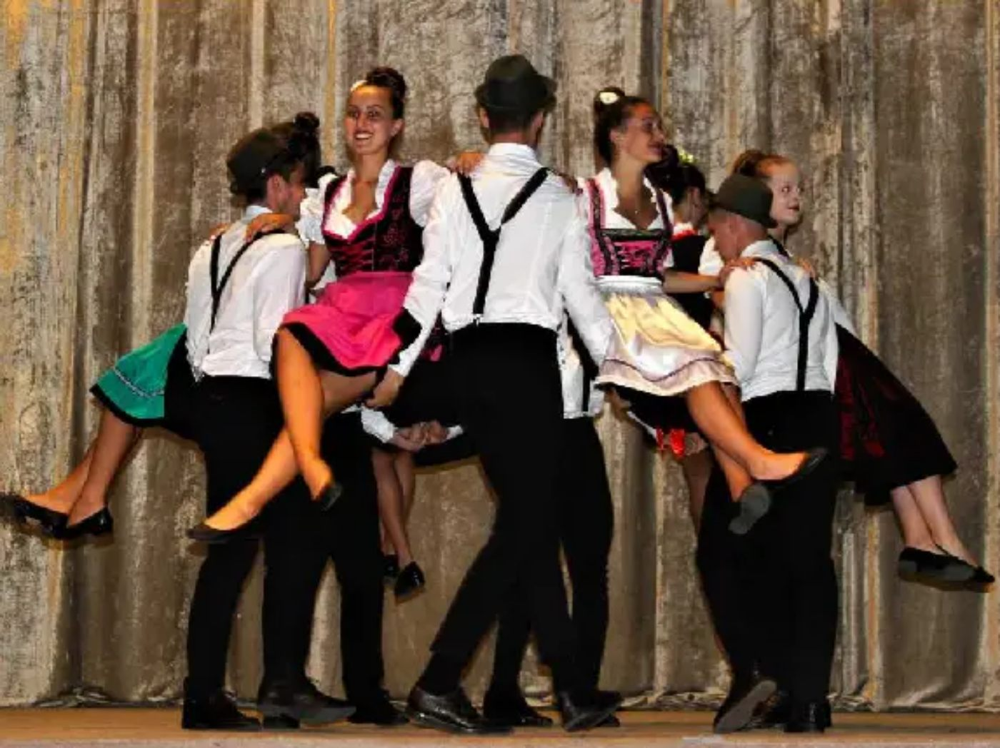
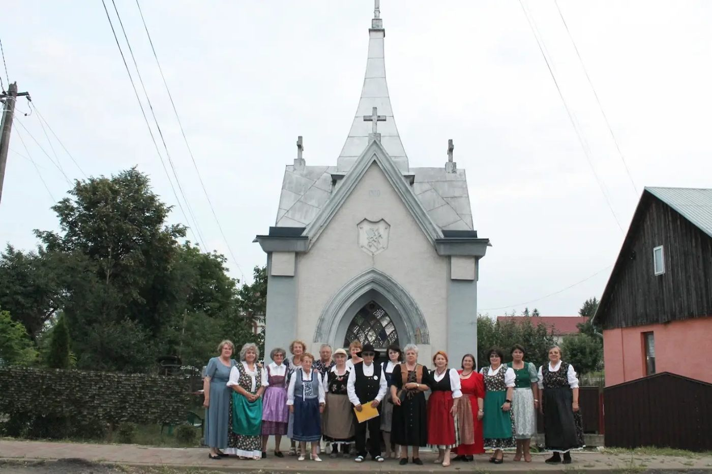